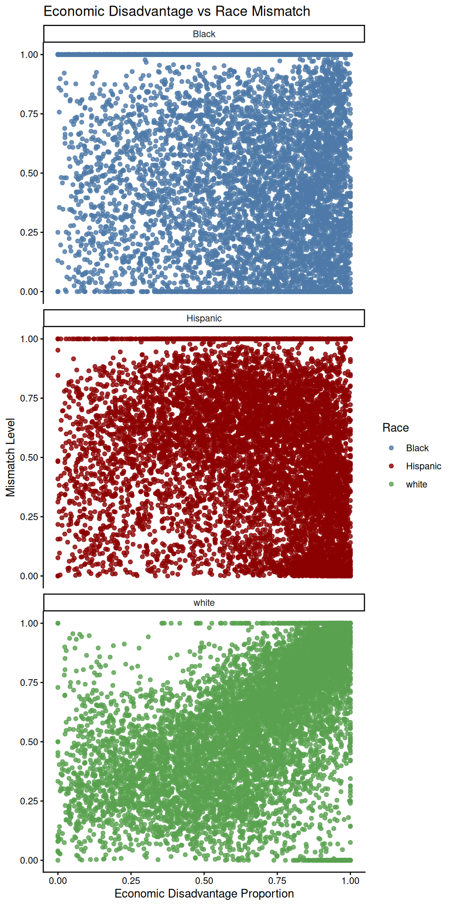

#load packages
library(tidyverse)
library(tidymodels)
library(janitor)
library(knitr)Data-Mini-1
texas <- read_csv("texasdata.csv")Research Question
How does economic disadvantage in a school affect the mismatch (or lack thereof) between the races of teachers and students?
Process
Once we loaded in the data, we needed a way to quantify the similarity of the teacher and student demographics for each school. We developed the following formula to represent the discrepancy between the demographics: \[ \text{Mismatch Level} =\frac{\lvert \text{student\_frac} - \text{teacher\_frac} \rvert}{\max\{\text{student\_frac}, \text{teacher\_frac}\}} \] This formula scales the discrepancy so that for each race, the mismatch level is a value from 0 to 1. A value of 0 represents an identical proportion of students and teachers for the given race, whereas a value of 1 is the maximum discrepancy, achieved by one of the proportions equaling 0.
Creating Variables
texas <- texas |>
mutate(
race_match = if_else((student_frac > 0 & teacher_frac > 0) | (student_frac == teacher_frac), 1, 0)
)
texas <- texas |>
mutate(
mismatch_level = case_when(
student_frac == 0 & teacher_frac == 0 ~ 0,
student_frac == 0 | teacher_frac == 0 ~ 1,
.default = abs(student_frac - teacher_frac) /
pmax(student_frac, teacher_frac)
)
)To display the data and analyze for significance, we constructed three plots, one for each race in the data, and constructed models based on our findings. The scatter plots compare economic disadvantage to our new mismatch level variable and are shown below.
Visualizations
ggplot(texas, aes(x = s_econ_disadv_prop, y = mismatch_level, color = race)) +
geom_point(alpha = 0.8) +
theme_classic() +
labs(
title = "Economic Disadvantage vs Race Mismatch",
x = "Economic Disadvantage Proportion",
y = "Mismatch Level",
color = "Race"
) +
facet_wrap(~ race, ncol = 1) +
scale_color_manual(
values = c(
"Black" = "#4E79A7",
"Hispanic" = "darkred",
"white" = "#59A14F"
)
)
Based on the visualizations, it appears that there may be a positive, linear relationship between economic disadvantage and the mismatch between white students and teachers at a given school.
texas_black <- texas |>
filter(race == "Black")
texas_hispanic <- texas |>
filter(race == "Hispanic")
texas_white <- texas |>
filter(race == "white")Modeling
# Black
texas_black_fit <- lm(mismatch_level ~ s_econ_disadv_prop, data = texas_black)
# Hispanic
texas_hispanic_fit <- lm(mismatch_level ~ s_econ_disadv_prop, data = texas_hispanic)
# White
texas_white_fit <- lm(mismatch_level ~ s_econ_disadv_prop, data = texas_white)r_squared_table <- tibble(
group = c("Black", "Hispanic", "White"),
r_squared = c(
glance(texas_black_fit)$r.squared,
glance(texas_hispanic_fit)$r.squared,
glance(texas_white_fit)$r.squared
)
)
r_squared_table# A tibble: 3 × 2
group r_squared
<chr> <dbl>
1 Black 0.0157
2 Hispanic 0.0415
3 White 0.333 tidy(texas_white_fit) |>
kable(digits = 3)| term | estimate | std.error | statistic | p.value |
|---|---|---|---|---|
| (Intercept) | 0.181 | 0.007 | 27.783 | 0 |
| s_econ_disadv_prop | 0.608 | 0.009 | 65.900 | 0 |
For every percentage point increase in a school’s economic disadvantage proportion, we expect the mismatch level between white teachers and students to increase, on average by 0.00608.
Results
Based on our analysis, we found that race mismatch level was most significantly influenced by economic disadvantage among white students and teachers. While an R-squared of 0.33 is not a very strong fit, there is some indication of a positive, linear, weak relationship between the economic disadvantage of a school’s district and the race mismatch between white teachers and students. Further analysis could investigate other predictors of mismatch level, such as school level or location type.